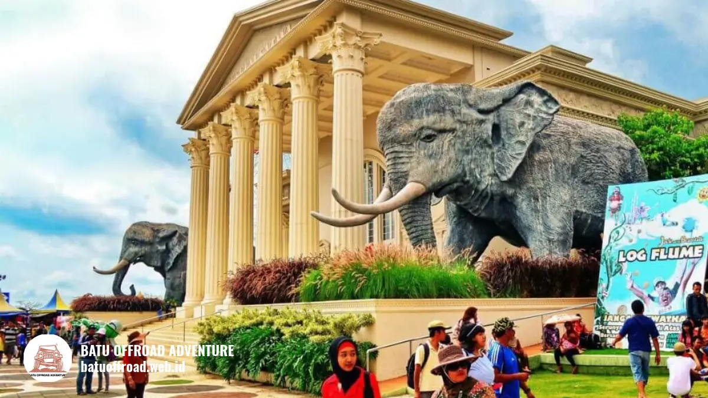

Destinasi Wisata Dekat Coban Putri dari Jatim Park 2 sampai Eco Active
Wisata dekat Coban Putri yang mudah digabung dalam satu hari adalah Jatim Park 2 dan Eco Active Park, ditambah Coban Talun, Alun-alun Kota Batu, Batu Night Spectacular, dan Museum Angkut.
Semua tujuan ini kami pilih untuk rombongan yang lebih dulu menjalani offroad Coban Putri Batu dengan Land Rover dan shuttle, karena urutan kegiatan di pagi hari menentukan seberapa nyaman wisata lanjutan di siang dan sore.
- Jatim Park 2 dan Eco Active Park adalah dua tujuan terdekat yang paling mudah digabung dengan offroad.
- Coban Talun, Alun-alun Kota Batu, Batu Night Spectacular, dan Museum Angkut melengkapi pilihan satu hari di Batu.
- Offroad paling nyaman dijadwalkan pagi, wisata santai pada siang, dan tujuan hiburan pada sore atau malam.
- Jam buka tiap tempat dapat berubah, sehingga perlu dicek ke pengelola sebelum berangkat.
- Rombongan keluarga, kantor, sekolah, dan komunitas bisa menyesuaikan jadwal lewat WhatsApp kami.
Destinasi Apa Saja yang Dekat dengan Coban Putri
Enam destinasi yang layak digabung adalah Jatim Park 2, Eco Active Park, Coban Talun, Alun-alun Kota Batu, Batu Night Spectacular, dan Museum Angkut, semuanya berada di wilayah Kota Batu.
Informasi pada bagian ini bersifat umum. Jam buka, tiket, dan jadwal pertunjukan setiap tempat dapat berubah mengikuti musim dan hari libur, jadi cek langsung ke pengelola resmi sebelum berangkat. Kota Batu dikenal sebagai kawasan wisata yang beragam, dan informasi umumnya dipublikasikan oleh Pemerintah Kota Batu.
Jatim Park 2
Jatim Park 2 adalah kawasan rekreasi keluarga di Kota Batu yang dikenal dengan wahana satwa dan museum satwa.
Kedekatannya dengan lokasi offroad kami membuatnya menjadi tujuan lanjutan paling populer bagi rombongan yang membawa anak-anak, terutama keluarga yang mencari aktivitas keluarga di Batu selain offroad.
Tempat ini cocok untuk keluarga, sekolah, dan komunitas yang ingin kegiatan edukatif sekaligus santai. Pengunjung biasanya membutuhkan waktu setengah hari atau lebih untuk menjelajah, sehingga paling pas dijadwalkan setelah offroad pagi dan makan siang.
Fasilitas umum yang tersedia di kawasan ini mencakup area makan dan toilet. Jam buka dan tiket sebaiknya dicek ke pengelola resmi karena dapat berubah pada hari libur.
Eco Active Park
Eco Active Park adalah tujuan wisata bernuansa petualangan dan permainan luar ruang di Kota Batu, dekat dengan lokasi offroad kami.
Tempat ini cocok bagi tim kantor, komunitas, dan rombongan remaja yang masih bersemangat bergerak setelah offroad. Pengunjung umumnya menyisihkan beberapa jam untuk mencoba beragam aktivitas di luar ruang.
Karena aktivitasnya terbuka, rombongan perlu menyesuaikan pakaian, alas kaki, dan kondisi cuaca. Jam buka, jenis permainan, dan tiket sebaiknya dikonfirmasi ke pengelola sebelum berangkat. Bagi rombongan yang menyukai suasana kompetitif, tempat ini dapat melengkapi sesi outbound team building yang kami sediakan dalam paket offroad, outbound, dan paintball.

Kawasan wisata favorit di Kota Batu yang dekat dengan rute offroad Coban Putri
Coban Talun
Coban Talun adalah air terjun di wilayah Batu yang menarik bagi pecinta wisata alam dan fotografi. Tempat ini cocok bagi keluarga, komunitas, dan rombongan yang ingin suasana hutan pinus dan udara sejuk.
Pengunjung umumnya membutuhkan waktu sekitar setengah hari untuk menikmati jalur dan area sekitarnya, termasuk menyesuaikan dengan kondisi cuaca.
Selain air terjun, ada aktivitas seru di sekitar Coban Talun seperti fun offroad, paintball, outbound, camping, dan trekking, dan rombongan bisa mempelajari wisata Coban Talun Batu lebih jauh untuk menentukan waktu kunjungan.
Fasilitas ringkas yang umum ditemukan berupa area parkir dan warung. Jam buka sebaiknya dikonfirmasi ke pengelola karena dapat berubah mengikuti musim.
Alun-alun Kota Batu
Alun-alun Kota Batu adalah ruang publik di pusat Kota Batu yang cocok untuk bersantai dan berfoto. Tempat ini cocok bagi keluarga, anak-anak, dan rombongan yang ingin istirahat ringan setelah kegiatan outdoor.
Durasi kunjungannya fleksibel, bisa singkat untuk jalan santai atau lebih panjang untuk menikmati suasana sore. Di sekitarnya, rombongan mudah menemukan tempat makan dan toko oleh-oleh.
Karena merupakan ruang publik, tidak ada jam tutup seketat tempat wisata berbayar, tetapi keramaian meningkat pada akhir pekan dan musim liburan. Alun-alun juga menjadi titik awal yang mudah dikenali bagi tamu yang datang dari kota lain.
Batu Night Spectacular (BNS)
Batu Night Spectacular, sering disebut BNS, adalah tujuan wisata malam di Kota Batu dengan wahana dan lampu warna-warni. Tempat ini cocok bagi keluarga, pasangan, dan tim kantor yang ingin menutup hari dengan suasana hiburan.
Karena buka pada sore dan malam, BNS cocok untuk rombongan yang menyelesaikan offroad pagi lalu beristirahat siang. Durasi kunjungan umumnya beberapa jam, tergantung jumlah wahana yang dicoba.
Fasilitas umum mencakup area makan dan toilet. Jam operasional dapat berbeda pada hari biasa dan akhir pekan, jadi konfirmasikan ke pengelola resmi sebelum berangkat.
Museum Angkut
Museum Angkut adalah museum transportasi di Kota Batu dengan koleksi kendaraan dari berbagai masa dan zona bertema. Tempat ini cocok bagi keluarga, sekolah, dan komunitas yang menyukai otomotif, sejarah, dan foto bertema.
Karena area di dalam ruang, museum ini nyaman dijadikan pilihan ketika cuaca kurang bersahabat. Pengunjung umumnya membutuhkan beberapa jam untuk menjelajah semua zona.
Bagi rombongan yang baru offroad dengan Land Rover, museum ini memberi kontras yang menarik karena menampilkan perkembangan kendaraan dari masa ke masa. Jam buka dan tiket sebaiknya dicek ke pengelola resmi sebelum berkunjung.
Bagaimana Perbandingan Seluruh Destinasi
Perbandingan berikut membantu rombongan memilih destinasi sesuai kebutuhan, usia peserta, dan waktu yang tersedia. Informasi bersifat umum, sehingga jam buka perlu dikonfirmasi ke pengelola.
| Destinasi | Jarak dari Basecamp | Jam Buka | Cocok untuk | Durasi Kunjungan Umum |
|---|---|---|---|---|
| Jatim Park 2 | Dekat, satu kawasan Kota Batu | Cek pengelola | Keluarga, sekolah | Setengah hari |
| Eco Active Park | Dekat, satu kawasan Kota Batu | Cek pengelola | Tim kantor, remaja | Beberapa jam |
| Coban Talun | Dalam wilayah Batu | Cek pengelola | Pecinta alam, keluarga | Setengah hari |
| Alun-alun Kota Batu | Pusat Kota Batu | Ruang publik | Semua usia | 1 sampai 2 jam |
| Batu Night Spectacular | Dalam Kota Batu | Sore & malam, cek pengelola | Keluarga, tim kantor | Beberapa jam |
| Museum Angkut | Dalam Kota Batu | Cek pengelola | Keluarga, sekolah | Beberapa jam |
Untuk jarak dan waktu tempuh dari titik jemput rombongan Anda, tim kami dapat memberi arahan lewat WhatsApp karena bergantung pada lalu lintas dan musim.
Bagaimana Usulan Dua Urutan Kunjungan Sehari
Dua urutan kunjungan yang kami sarankan adalah rute keluarga yang santai dan rute tim kantor yang aktif. Keduanya dimulai dengan offroad pagi lalu dilanjutkan ke wisata sekitar. Berikut dua usulan yang sering kami rekomendasikan (waktu yang tertera adalah perkiraan yang bisa disesuaikan):
Urutan A untuk Keluarga
- Pagi sekitar pukul 08.00: tiba di basecamp, briefing, lalu offroad bersama Land Rover.
- Siang: makan di kantin dan istirahat di pendopo.
- Setelah istirahat: lanjut ke Jatim Park 2 untuk wisata keluarga.
- Sore: mampir ke Alun-alun Kota Batu untuk bersantai sebelum pulang.
Urutan ini cocok bagi rombongan dengan anak-anak dan peserta yang lebih nyaman dengan ritme santai, dan polanya mirip dengan itinerary 1 hari Coban Talun dengan offroad dan kuliner Batu yang menaruh offroad di pagi hari dan kuliner di sore hari.
Urutan B untuk Tim Kantor
- Pagi sekitar pukul 08.00: briefing, lalu sesi outbound team building.
- Menjelang siang: offroad bersama Land Rover.
- Siang: makan dan istirahat.
- Setelah itu: kunjungi Eco Active Park untuk aktivitas lanjutan.
- Sore hingga malam: tutup hari di Batu Night Spectacular.
Urutan ini cocok untuk gathering yang menekankan kekompakan tim, dan panitia dapat mengembangkannya menjadi rundown lengkap seperti pada susunan acara gathering kantor offroad di Batu.
Bagaimana Cara Menggabungkan dengan Paket Offroad Batu Offroad
Cara menggabungkan yang paling nyaman adalah menaruh kegiatan paling berat, yaitu offroad atau outbound, di pagi hari. Wisata santai ditaruh siang dan sore agar stamina rombongan terjaga.
Beberapa pertimbangan agar gabungannya berjalan baik:
- Jam: mulai pagi supaya ada waktu longgar untuk makan siang dan perpindahan antar tempat.
- Stamina: tempatkan kegiatan fisik lebih dulu, lalu pilih wisata yang lebih santai.
- Rombongan: peserta lansia dan anak-anak membutuhkan jeda istirahat lebih sering.
- Cuaca: siapkan alternatif tempat tertutup, misalnya museum, bila hujan.
- Transportasi: pakai layanan shuttle transportasi kami untuk berpindah antar titik agar rombongan tidak terpencar.
Berdasarkan data situs resmi Batu Offroad Adventure tahun 2026, kami telah menyelenggarakan lebih dari 180 event, sehingga kami terbiasa menyusun jadwal gabungan seperti ini.
Rombongan keluarga biasanya memadukan wisata sekitar dengan paket offroad dan fun games, sedangkan yang menyukai aktivitas air sering menambahkan paket offroad, rafting, dan fun games.
Karena basecamp kami berada di Temas, rute ke Coban Putri dari Batu, Malang, bandara, dan stasiun menjadi dasar perhitungan waktu perpindahan antar titik, sementara fasilitas Coban Putri untuk rombongan seperti pendopo dan kantin membantu rombongan beristirahat di sela jadwal.
FAQ
-
Wisata apa yang paling dekat dengan Coban Putri?
Jatim Park 2 dan Eco Active Park adalah dua wisata terdekat yang paling mudah digabung. Keduanya berada dekat dengan lokasi offroad kami dan cocok untuk rombongan keluarga maupun kantor. -
Apakah semua wisata ini bisa dikunjungi dalam satu hari?
Sebaiknya tidak semuanya. Pilih dua sampai tiga tujuan sesuai stamina dan jumlah peserta, lalu letakkan kegiatan paling aktif di pagi hari agar jadwal tidak terburu-buru. -
Apakah jam buka tempat wisata selalu sama?
Tidak selalu. Jam buka dapat berubah mengikuti musim, hari libur, dan kebijakan pengelola, sehingga rombongan sebaiknya mengecek informasi resmi sebelum berangkat. -
Apakah cocok untuk rombongan dengan anak dan lansia?
Cocok dengan penyesuaian. Pilih tujuan yang lebih santai, beri jeda istirahat, dan pertimbangkan persiapan offroad Batu untuk lansia bila ada peserta usia lanjut. -
Bagaimana cara menyusun jadwal gabungan dengan Batu Offroad?
Kirim tanggal, jumlah peserta, dan tujuan rombongan lewat WhatsApp. Tim kami lalu menyarankan kombinasi offroad, outbound, dan wisata sekitar yang paling sesuai.
Kesimpulan
Wisata dekat Coban Putri menawarkan banyak pilihan, dari Jatim Park 2 dan Eco Active Park hingga Coban Talun, Alun-alun Kota Batu, Batu Night Spectacular, dan Museum Angkut. Kuncinya adalah memilih sedikit tujuan dan mengatur urutannya dengan baik.
Takeaways:
- Mulai dengan kegiatan fisik di pagi hari.
- Pilih dua sampai tiga tujuan, bukan semuanya.
- Konfirmasi jam buka ke pengelola sebelum berangkat.
- Gunakan shuttle transportasi agar rombongan tetap kompak.
Offroad Coban Putri cocok untuk keluarga, kantor, sekolah, maupun komunitas yang ingin satu hari penuh di Batu.
Kirim tanggal dan jumlah peserta ke WhatsApp +62 812-3398-9707, lalu tim Batu Offroad menyusun kegiatannya, dan rombongan yang ingin membandingkan kegiatan dapat menimbang paket Batu Offroad terlebih dahulu.
Artikel Terkait